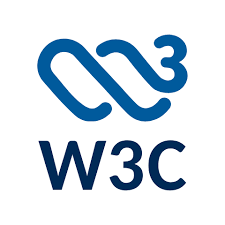

Soy María del Río Álvarez y estoy cursando Segundo de Bachillerato tecnológico en el centro Salesianos San Juan Bosco A Coruña. Este proyecto constituye mi trabajo final de la clase de TIC, con los subproyectos y prácticas.
El objetivo de esta web es exponer todos los trabajos realizados en la clase de TIC a lo largo de todo el curso, uncluyendo los respectivos enlaces, procedimientos, explicaciones, medios utilizados, etc
Me considero una persona responsable, constante y resolutiva. Mis expectativas a futuro son haber terminado mi propia página diseñada por mi que contenga todo mi trabajo durante este curso.
Este fue el proyecto inicial de práctica con el que nos introdujimos en el mundo de entender comofunciona el Visual Studio Code, GitHub, Bootstrap. Tambien crear nuevos repositorios, commits y entender cuando mis elementos, páginas y todo están en solo nuestro dispositivo. Como se puede ver, la imagen no funciona, debido a que era página de práctica donde también aprendimos el código básico de un HTML, lang, y etiquetas simples.
Proyecto de práctica más amplio donde aprendimos a controlar menús, títulos (H1, H2. H3, H4, H5), negritas (strong), cursiva (em), subrayar, tipografía, recuadros y colores con Estilos CSS
Proyecto amplio con un gran procedimiento siguiendo las instrucciones indicadas.
Consiste en crear un nuevo repositorio con un enlace público a Git Hub. Una vez creado y poniendo el código básico del html (lang, script, head, body) comenzamos creando un menú que nos lleva a nuestras 3 páginas principales. En la primera (INDEX) presentaremos las 3 universidades y la carrera que elegí. En al segunda (OPCIONES) concretamos aspectos relevantes (localidad, procesos de admisión, duración, asignaturas, créditos, etc) y en la tercera página (SALIDAS) ya incluímos las opciones laborales que surgen de tener una titulación en esta carrera.
Aparte de eso, incluiremos tambien elementos de bootstrap y de css para hacerlo más interactivo, visual y elaborado (acordeón, tabla, columnas, tipografía, subrayar, alertas...)
